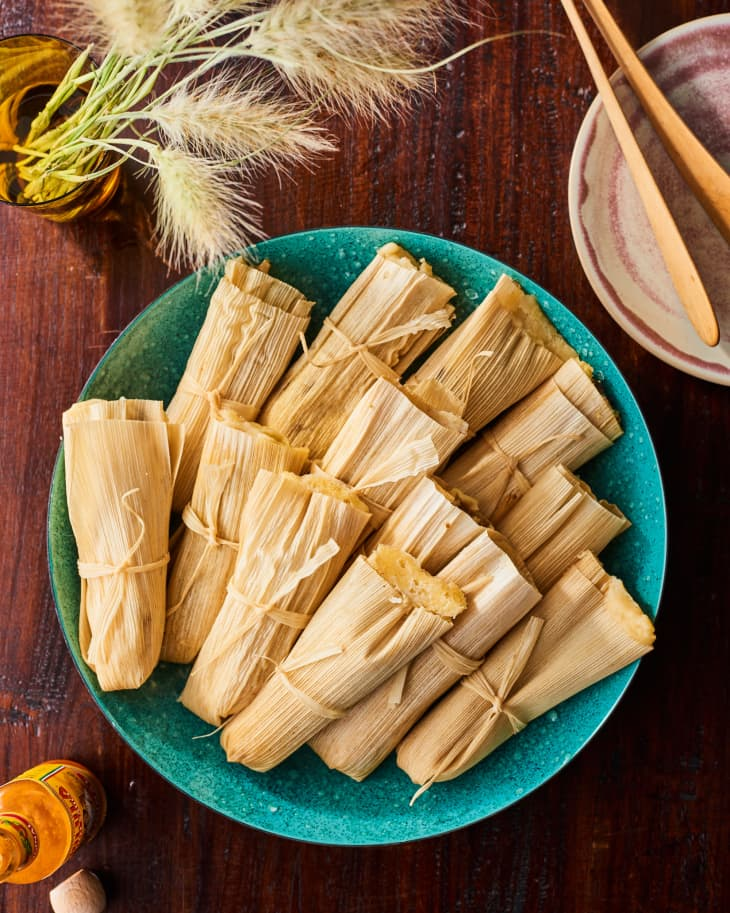

Tamales De Pollo

Ingredients List
- 2lbs of chicken(shredded)
- 2lbs of Masa
- Guajillo dried peppers
- Salt and pepper
- Galic clove
- Corn Husks for Tamale
Steps for Recipe
- Boil guajillo pepper in pan filled with water. Use blender to blend guajillo pepper and garlic gloves with salt and pepper.Mix until thick sauce is produced.
- Add half of the sauce to the masa and the other half to the chicken.
- Cook chicken in pan with the guajillo sauce for 30mins or until sauce is reduced.
- Mix masa with guajillo sauce untill completely uniform.
- Wet corn husks in water for 30mins, then apply masa to corn husk covering smooth side of the husk with masa.
- Add chicken to middle part of the corn husk that is covered with masa.
- Fold tamales from one side to the other and fold top to midway.
- Fill tall pan with water, then tigthly fill pan with folded tamales so bottom opening is facing up.
- Cook until tamale feel tender and compact, enjoy your tamales!!!